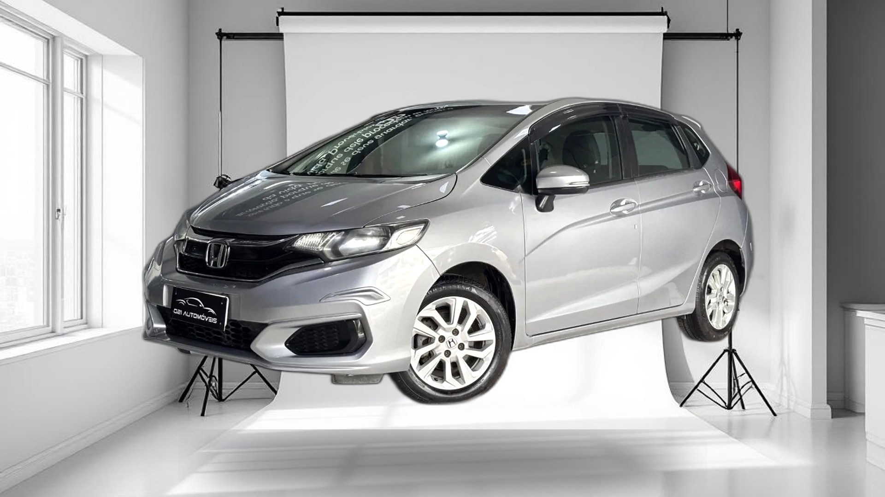
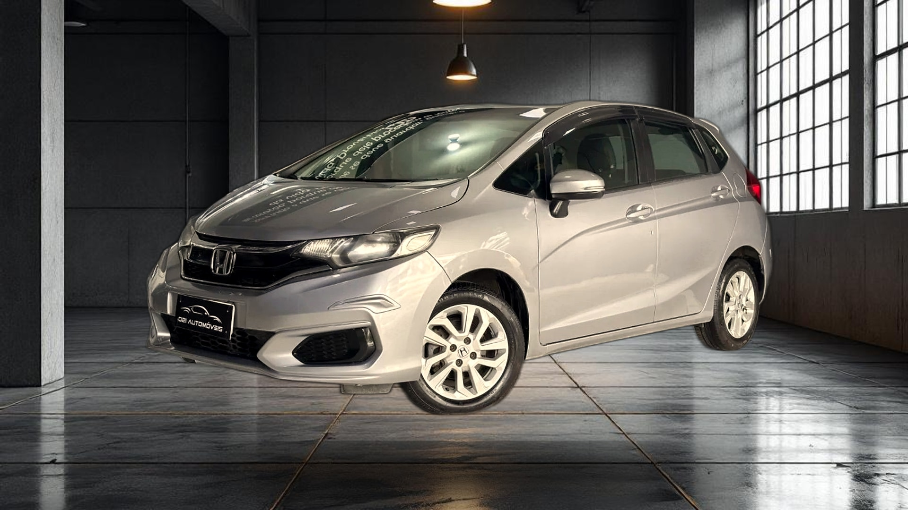
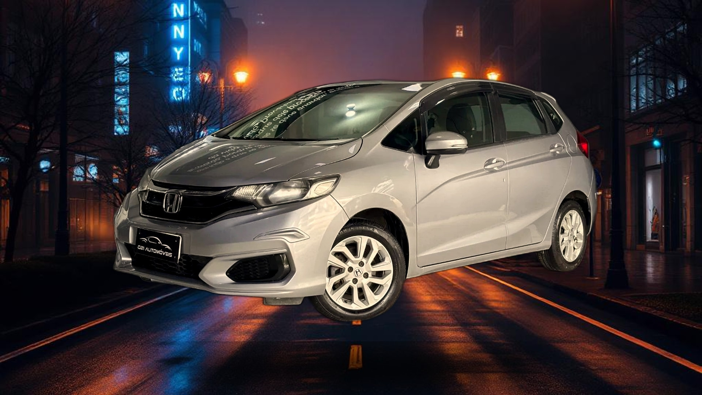

Foto Original

Honda Fit · Composição Sharp determinística · Sombra SVG ellipse · 2026-04-21




| Cenário | Variação | Tamanho | Corte? |
|---|---|---|---|
| Showroom Escuro | 1 | 303 KB | Topo: 56px |
| Estúdio Branco | 4 | 230 KB | Topo: 56px |
| Garagem Premium | 3 | 319 KB | Topo: 56px |
| Urbano Noturno | 3 | 323 KB | Topo: 56px |
| Neutro Gradiente | 4 | 164 KB | Topo: 56px |
✓ Sombra gerada via SVG <ellipse> + blur. Sem retângulo preto.
Elipse: 1148x147px · Blur: 44px
| 1.1 Retângulo preto Tier B | ✓ CORRIGIDO — SVG ellipse |
| 1.2 Faixa preta Tier C (Externo) | ✓ RESOLVIDO — sem composite extra; artefato do Flux Fill; cenário removido |
| 1.3 Cenário Neutro | ✓ RESTAURADO — luxury_outdoor → neutro_gradiente em 5 arquivos |
Com yRatio=0.92 e veículo de 1050px de altura no canvas 1080px, o topo é cortado em 56px. Será ajustado na Prioridade 2 (yRatio + escala).